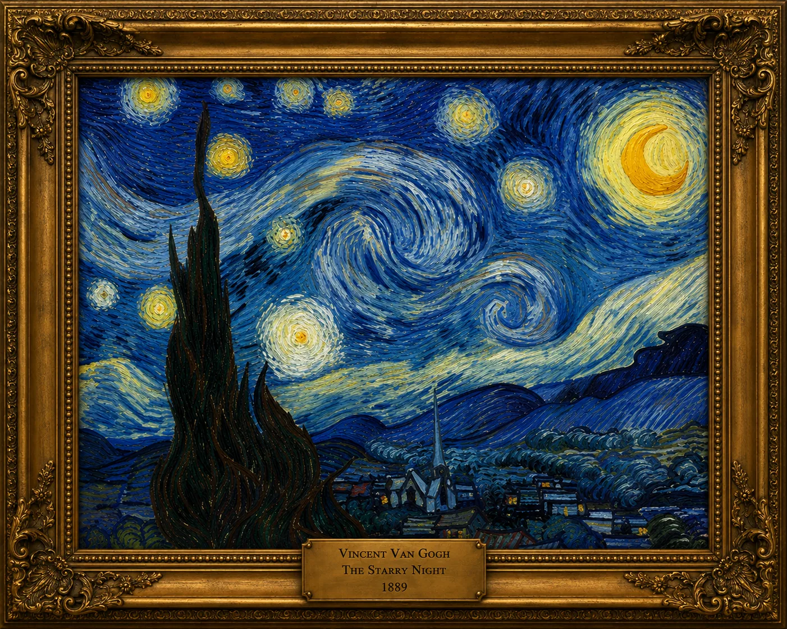

ARTDACI · ART BEYOND THE FRAME
ARTDACI
REIMAGINED
Four masters, new perspectives. Explore historical masterpieces and their creative digital reinterpretations — where art history meets imagination.
Explore the animationFour masters · Selected works
Four masters · Selected works

Mona Lisa
Leonardo da Vinci
c. 1503–1519
View animated interpretation ↗
Girl with a Pearl Earring
Johannes Vermeer
c. 1665
Reinterpretation forthcoming

The Starry Night
Vincent van Gogh
1889
Reinterpretation forthcoming

Impression, Sunrise
Claude Monet
1872
Reinterpretation forthcoming
First digital reinterpretation
Mona Lisa · Beyond the book
When a masterpiece comes alive
Leonardo da Vinci’s famous portrait emerges from the pages of a book. This artistic animation bridges ARTDACI’s printed edition and its digital world. It is a creative reinterpretation, not an authentic movement of the original painting.
Explore the original collectionOnly the Mona Lisa animation is currently available. Other artists’ reinterpretations will be added as they are created.